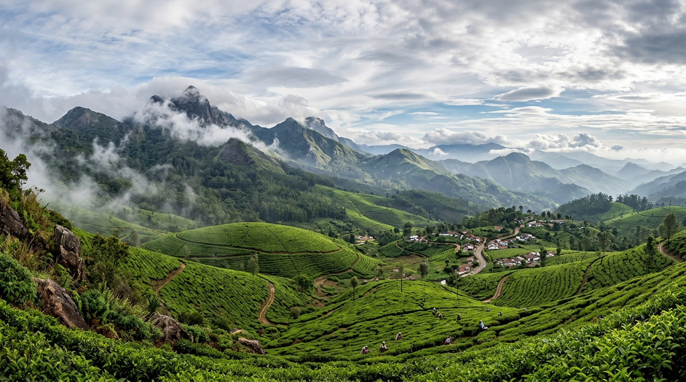
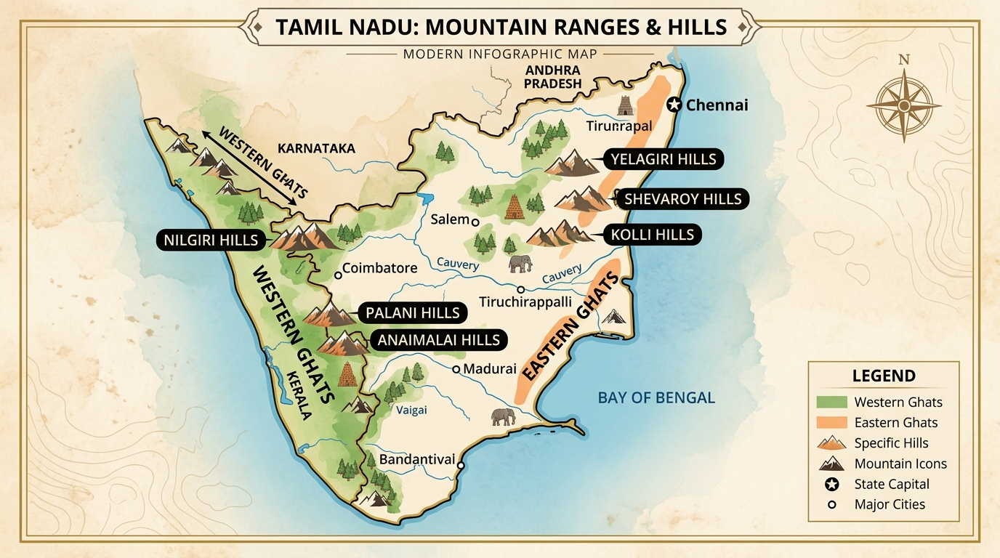
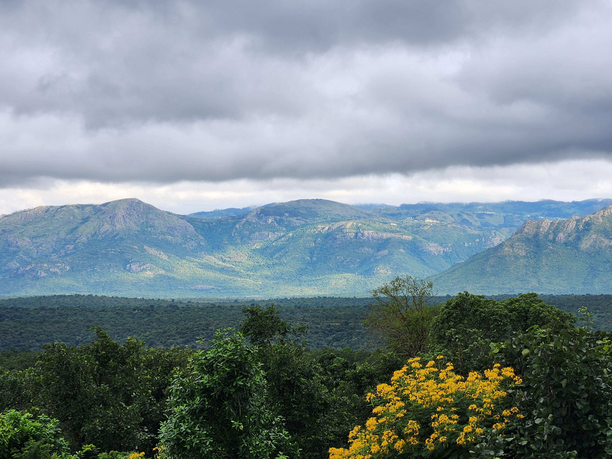
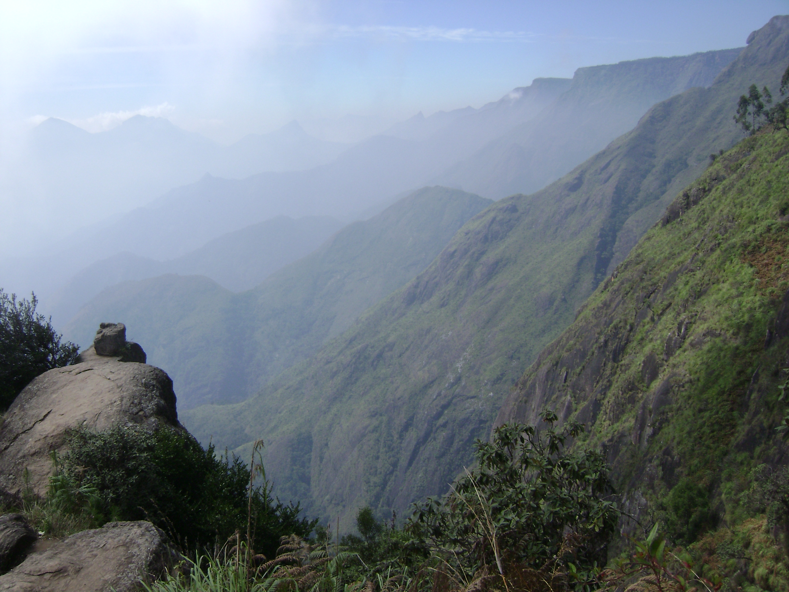
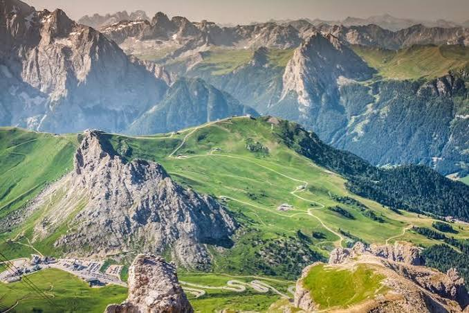
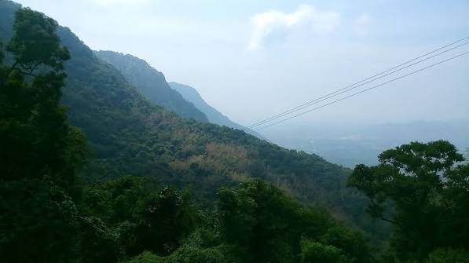
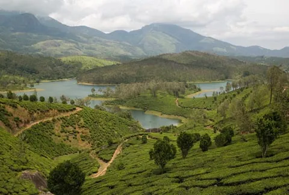

தமிழ்நாட்டின் இயற்கை அமைப்பில் மலைகள் முக்கியமான இடத்தைப் பெற்றுள்ளன. இவை மழையைப் பெறுவதற்கும், ஆறுகளுக்கு நீராதாரமாக இருப்பதற்கும், காடுகள் மற்றும் வனவிலங்குகளைப் பாதுகாப்பதற்கும், விவசாயம் மற்றும் சுற்றுலாவை வளர்ப்பதற்கும் உதவுகின்றன.
தமிழ்நாட்டில் சிறிய குன்றுகள் முதல் 2,600 மீட்டருக்கும் அதிகமான உயரமுள்ள சிகரங்கள் வரை பல்வேறு மலை அமைப்புகள் காணப்படுகின்றன. பல்வேறு புவியியல் தரவுத்தளங்களில் தமிழ்நாட்டில் 1,379 பெயரிடப்பட்ட மலைகள் மற்றும் சிகரங்கள் இருப்பதாகக் குறிப்பிடப்படுகிறது.
ஆனால் இவை அனைத்தையும் தனித்தனி பெரிய மலைத்தொடர்களாகக் கணக்கிட முடியாது. தமிழ்நாட்டின் முக்கிய மலை அமைப்புகள் பெரும்பாலும் மேற்குத் தொடர்ச்சி மலைகள் மற்றும் கிழக்குத் தொடர்ச்சி மலைகளின் பகுதிகளாக உள்ளன.

மலைப்பகுதிகளில் பெய்யும் மழைநீர் சிற்றாறுகள், ஆறுகள் மற்றும் நீர்த்தேக்கங்களுக்கு செல்கிறது. காவிரி, பவானி, வைகை போன்ற முக்கிய ஆறுகளின் நீர்வளத்தில் மலைப்பகுதிகள் முக்கிய பங்கு வகிக்கின்றன.
குறிப்பாக மேற்குத் தொடர்ச்சி மலைகள் தென்மேற்கு பருவமழைக் காற்றைத் தடுத்து தமிழ்நாட்டிற்கும் தென்னிந்தியாிற்கும் அதிக மழைப்பொழிவை உருவாக்குவதில் முக்கிய பங்கு வகிக்கின்றன.
மலைப்பகுதிகளில் அடர்ந்த காடுகள் காணப்படுகின்றன. யானை, புலி, மான், நீலகிரி வரையாடு போன்ற பல்வேறு விலங்குகளுக்கும் அரிய தாவரங்களுக்கும் இவை இயற்கையான வாழிடமாக உள்ளன.
மலைப்பகுதிகளில் தேயிலை, காபி, ஏலக்காய், மிளகு, ஆரஞ்சு மற்றும் பல்வேறு தோட்டப் பயிர்கள் வெற்றிகரமாகப் பயிரிடப்படுகின்றன.
ஊட்டி, கொடைக்கானல், ஏற்காடு, கொல்லிமலை மற்றும் ஏலகிரி போன்ற மலைப்பகுதிகள் தமிழ்நாட்டின் முக்கிய சுற்றுலாத் தலங்களாக விளங்கி உள்நாட்டு மற்றும் வெளிநாட்டு பயணிகளை ஈர்க்கின்றன.
விவசாயம், தேயிலை மற்றும் காபித் தோட்டங்கள், வனத்துறை, சுற்றுலா, தங்குமிடங்கள் மற்றும் உள்ளூர் வணிகங்கள் மூலம் மலைப்பகுதிகள் பலருக்கு வாழ்வாதாரத்தை வழங்குகின்றன.

நீலகிரி மலைகள் தமிழ்நாட்டின் மிகவும் புகழ்பெற்ற மலைப்பகுதிகளில் ஒன்றாகும். இப்பகுதியின் உயரமான சிகரமாக தொட்டபெட்டா (சுமார் 2,637 மீட்டர்) விளங்குகிறது. ஊட்டி மற்றும் குன்னூர் போன்ற புகழ்பெற்ற மலைவாழிடங்கள் இப்பகுதியில் அமைந்துள்ளன. தேயிலைத் தோட்டங்கள், பசுமையான மலைச்சரிவுகள், சோலைக்காடுகள், நீலகிரி மலை ரயில் மற்றும் குளிர்ந்த காலநிலை காரணமாக இது முக்கியமான சுற்றுலாத் தலமாக விளங்குவதுடன் பல அரிய தாவரங்கள் மற்றும் விலங்குகளின் வாழிடமாகவும் உள்ளது.

பழனி மலைகள் மேற்குத் தொடர்ச்சி மலைகளின் முக்கியமான பகுதியாகும். இம்மலைப்பகுதியின் உயரமான சிகரம் வந்தரவு (சுமார் 2,533 மீட்டர்) ஆகும். இம்மலைப்பகுதியில் அமைந்துள்ள கொடைக்கானல், தமிழ்நாட்டின் புகழ்பெற்ற மலைவாழிடங்களில் ஒன்றாகும். இங்கு சோலைக்காடுகள், ஏரிகள், நீர்வீழ்ச்சிகள், பைன் காடுகள் மற்றும் பல்வேறு தாவரங்கள் காணப்படுகின்றன.

ஆனைமலை மலைப்பகுதி மேற்குத் தொடர்ச்சி மலைகளின் முக்கியமான உயிரியல் வளமிக்க பகுதியாகும். வால்பாறை இப்பகுதியின் முக்கியமான மலைவாழிடமாகும். தேயிலைத் தோட்டங்களுடன் இணைந்து அடர்ந்த காடுகளும் காணப்படுகின்றன. யானைகள், புலிகள், சிறுத்தைகள் மற்றும் பல்வேறு பறவை இனங்கள் போன்ற வனவிலங்குகளுக்கு இப்பகுதி முக்கியமான வாழிடமாக உள்ளது. (*குறிப்பு: ஆனைமுடி சிகரம் 2,695 மீ கேரளா எல்லையில் அமைந்துள்ளது; ஆனைமலை மலைத்தொடர் தமிழ்நாடு–கேரள எல்லைப் பகுதிகளில் பரவியுள்ளது).

சேவராயன் மலைகள் கிழக்குத் தொடர்ச்சி மலைகளின் முக்கியமான பகுதியாகும். இதன் உயரமான சிகரம் சோலைக்கரடு / சேவராயன் சிகரம் (சுமார் 1,620 மீட்டர்) ஆகும். இம்மலைப்பகுதியில் அமைந்துள்ள ஏற்காடு, புகழ்பெற்ற மலைவாழிடமாகும். காபி மற்றும் ஆரஞ்சு போன்ற பயிர்கள் இப்பகுதியில் முக்கியமாக வளர்க்கப்படுகின்றன.

கொல்லிமலை நாமக்கல் மாவட்டத்தில் அமைந்துள்ள முக்கியமான கிழக்குத் தொடர்ச்சி மலைப்பகுதியாகும் (உயரம் சுமார் 1,300 மீட்டர் வரை). இங்கு செல்லும் மலைப்பாதையில் உள்ள 70 கொண்டை ஊசி வளைவுகள் மிகவும் புகழ்பெற்றவை. கொல்லிமலை அதன் இயற்கை வளம் மற்றும் மருத்துவ மூலிகைகளுக்காகவும் அறியப்படுகிறது. ஆகாய கங்கை நீர்வீழ்ச்சி மற்றும் அரப்பளீஸ்வரர் கோயில் இப்பகுதியின் சிறப்புகளாகும்.

ஏலகிரி மலைகள் திருப்பத்தூர் மாவட்டத்தில் அமைந்துள்ள அழகிய மலைப்பகுதியாகும். இதன் உயரமான சிகரம் சுவாமிமலை (சுமார் 1,322 மீட்டர்) ஆகும். இப்பகுதி பல சிறிய கிராமங்களைக் கொண்டுள்ளது. மலையேற்றம், இயற்கை நடைபயணம், பழத்தோட்டங்கள் மற்றும் பாராகிளைடிங் போன்ற செயல்பாடுகளுக்கு ஏலகிரி பிரபலமானது.
| மலைப்பகுதி | மலைத்தொடர் | உயரமான சிகரம் / உயரம் | முக்கிய சிறப்புகள் |
|---|---|---|---|
| நீலகிரி மலைகள் | மேற்குத் தொடர்ச்சி | தொட்டபெட்டா — 2,637 மீ | ஊட்டி, தேயிலைத் தோட்டங்கள், மலை ரயில் |
| பழனி மலைகள் | மேற்குத் தொடர்ச்சி | வந்தரவு — 2,533 மீ | கொடைக்கானல், சோலைக்காடுகள், ஏரிகள் |
| ஆனைமலை & வால்பாறை | மேற்குத் தொடர்ச்சி | ஆனைமுடி — 2,695 மீ* | மழைக்காடுகள், தேயிலை, வனவிலங்குகள் |
| சேவராயன் மலைகள் | கிழக்குத் தொடர்ச்சி | சோலைக்கரடு — ~1,620 மீ | ஏற்காடு, காபி, ஆரஞ்சு |
| கொல்லிமலை | கிழக்குத் தொடர்ச்சி | ~1,300 மீ வரை | 70 கொண்டை ஊசி வளைவுகள், ஆகாய கங்கை |
| ஏலகிரி மலைகள் | கிழக்குத் தொடர்ச்சி | சுவாமிமலை — ~1,322 மீ | மலையேற்றம், பாராகிளைடிங், பழத்தோட்டங்கள் |
* குறிப்பு: ஆனைமுடி சிகரம் கேரளாவில் அமைந்துள்ளது. இது ஆனைமலை மலைத்தொடரின் உயரமான சிகரம்; தமிழ்நாட்டின் உயரமான சிகரம் என்று குறிப்பிடக்கூடாது.
“மலைகள் உயரமாக நிற்பவை மட்டுமல்ல; அவை மழை, நீர், காடு, உயிரினங்கள் மற்றும் மனித வாழ்வைத் தாங்கி நிற்கும் இயற்கையின் தூண்கள்.”